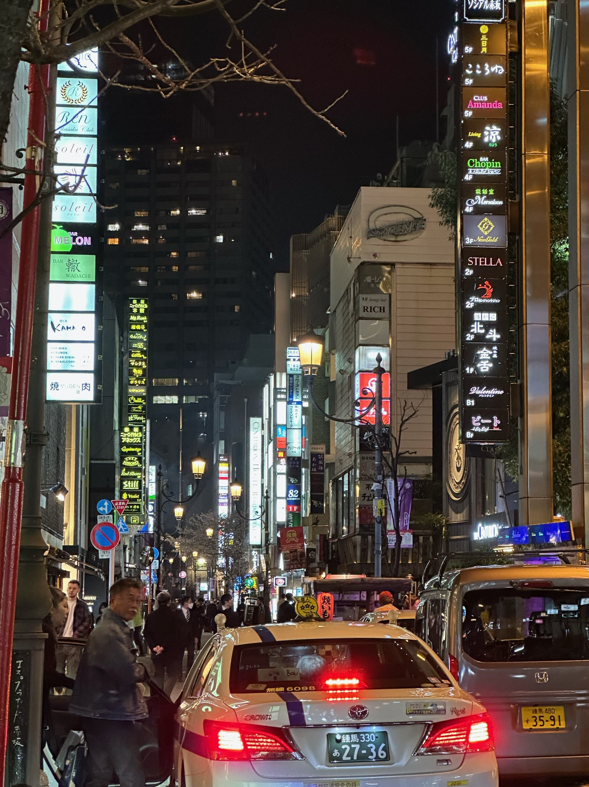
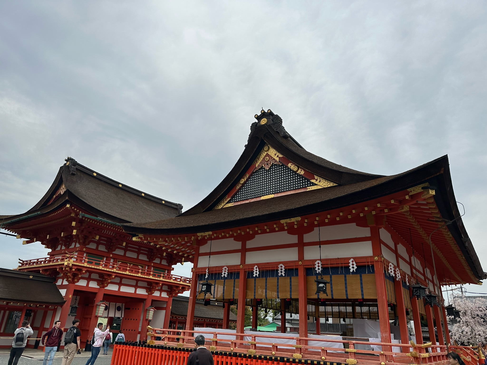
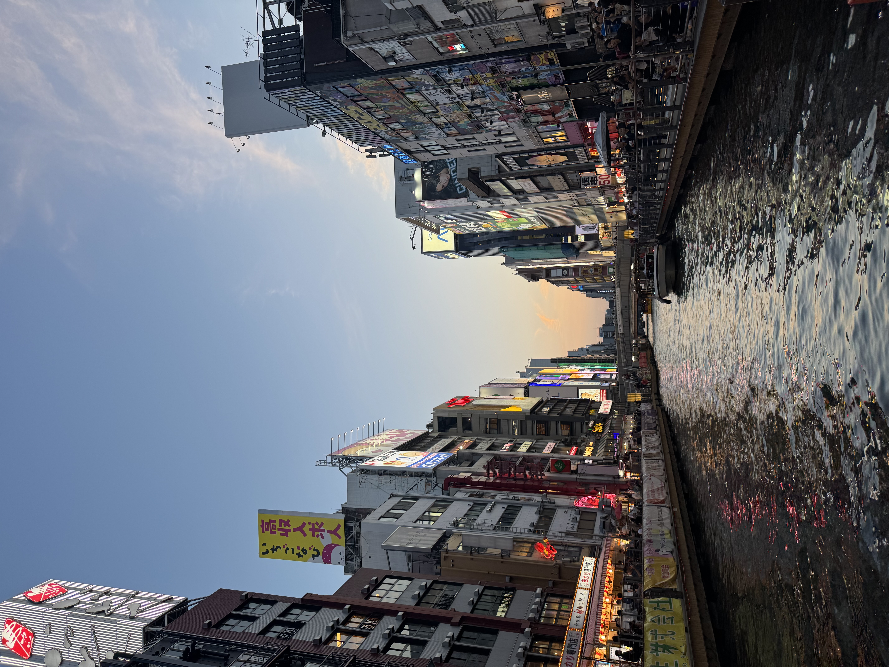
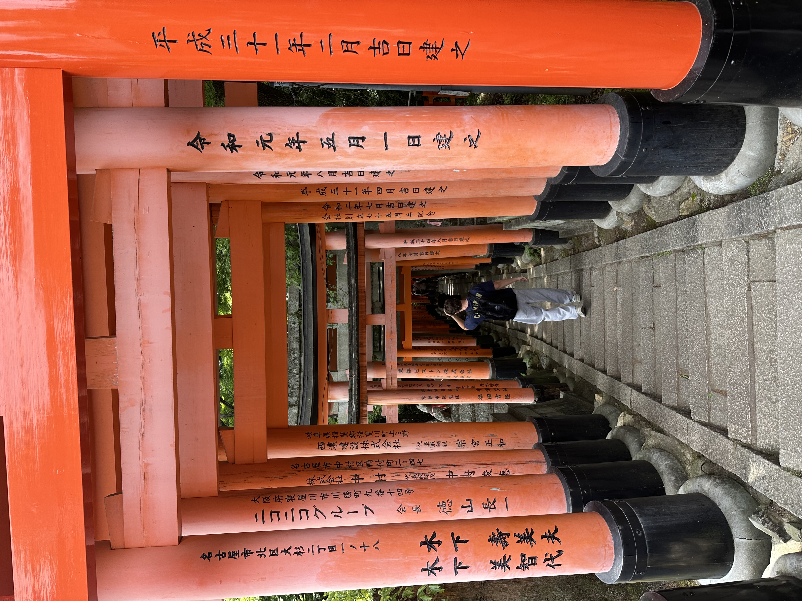
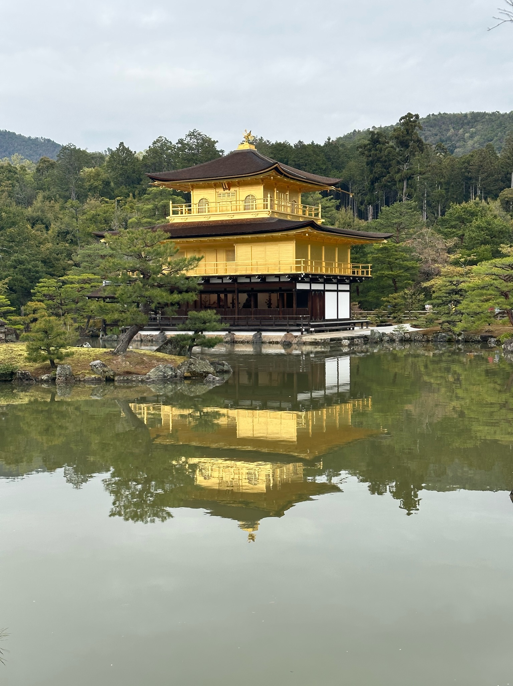
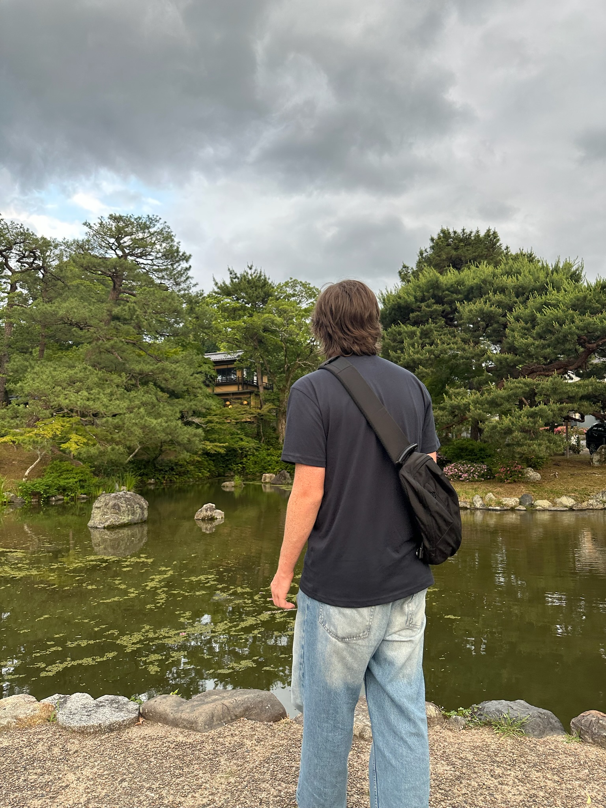
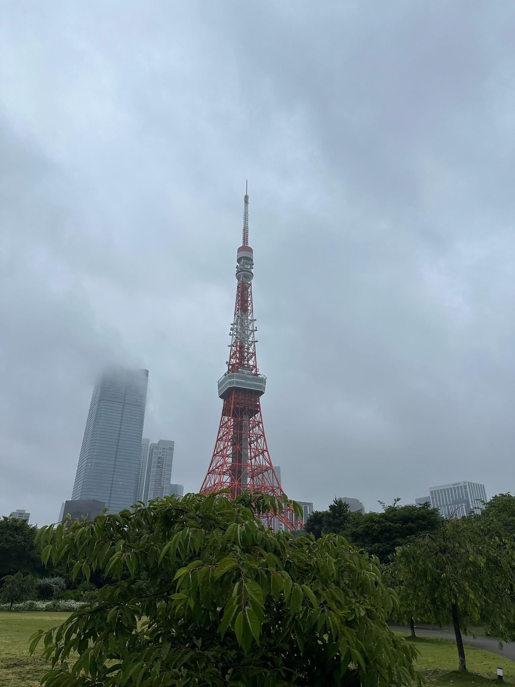

Japanese Cities
Japan is home to many fascinating cities, each with its own unique character and attractions. From the neon-lit streets of Tokyo to the traditional temples of Kyoto, there's something for every traveler.
Tokyo

Tokyo, the capital city of Japan, is a bustling metropolis known for its modern architecture, shopping districts, and vibrant nightlife. I explored historic temples, enjoyed amazing food, and visited many cool museums and galleries.
On my second trip to Japan with my friend, we visited Tokyo Skytree so many times because it offers an amazing view of the city as well as being an amazing mall.
Kyoto

Kyoto, once the capital of Japan, is famous for its well-preserved temples, traditional tea houses, and beautiful gardens. It's a city that offers a glimpse into Japan's rich cultural heritage and history, making it a must-visit destination for those interested in traditional Japanese culture.
One of the most memorable experiences on my trips is visiting the Fushimi Inari Shrine, where I was amazed by the thousands of red torii gates that lead up the mountain.
Osaka

Osaka is known for its modern architecture, nightlife, and hearty street food. The city is a major economic hub and offers a mix of traditional and contemporary attractions, including historic castles, bustling shopping streets, and vibrant entertainment districts.
Visiting Osaka's downtown Dotonbori is an experience not to be missed. The neon signs and bustling atmosphere create a unique and exciting environment. And the street food is delicious!
Photos



